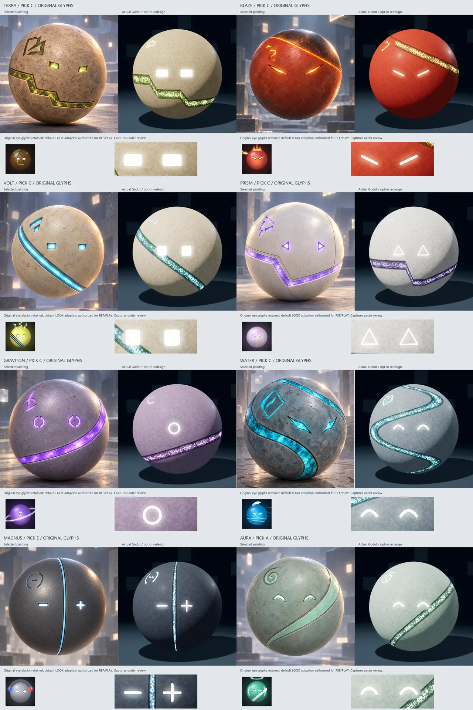
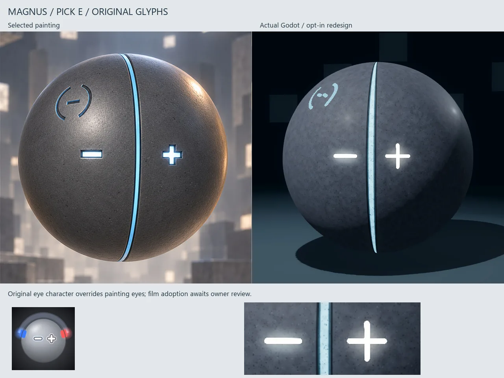
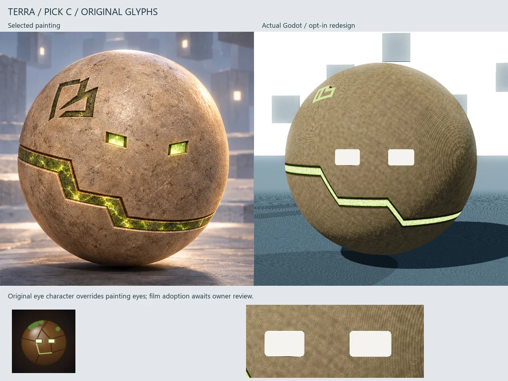

Original small glyphs, eight shell directions
Eight orbs now share a clearer visual direction without losing their individual colours or small original eye glyphs. These pairs put the selected shell paintings beside the first rendered batch.
The eyes keep their simpler character and lose the heavy drawn outlines. Warm earth, ember red, ochre, ivory, violet, teal and jade remain distinct. MAGNUS stays dark slate, with a restrained blue meridian.
The identity is stronger, but the shells still need polish. Fine surface patterns can read as fabric, and bright glyphs can look like stickers. The next pass aims for stone and ceramic, wider recessed channels and light that feels contained in the shell.
Eight directions, original glyphs


